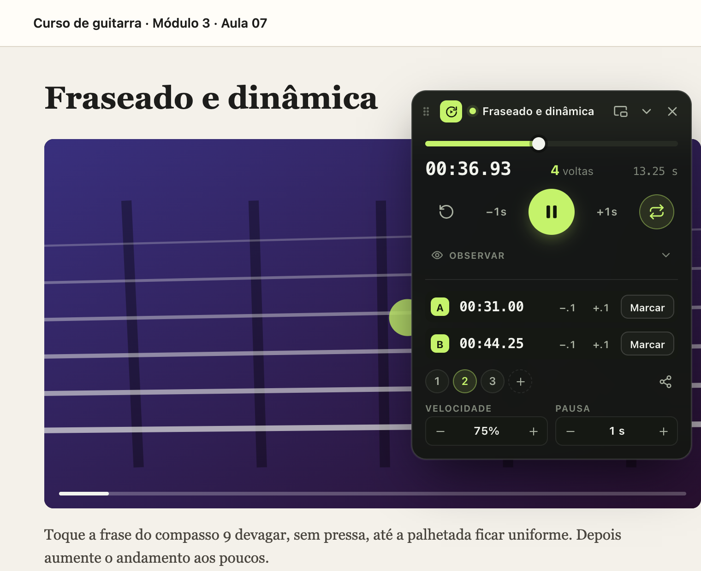
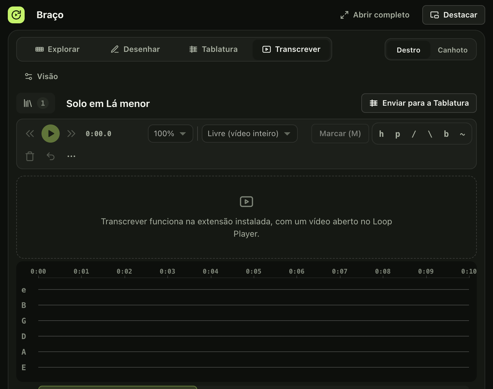
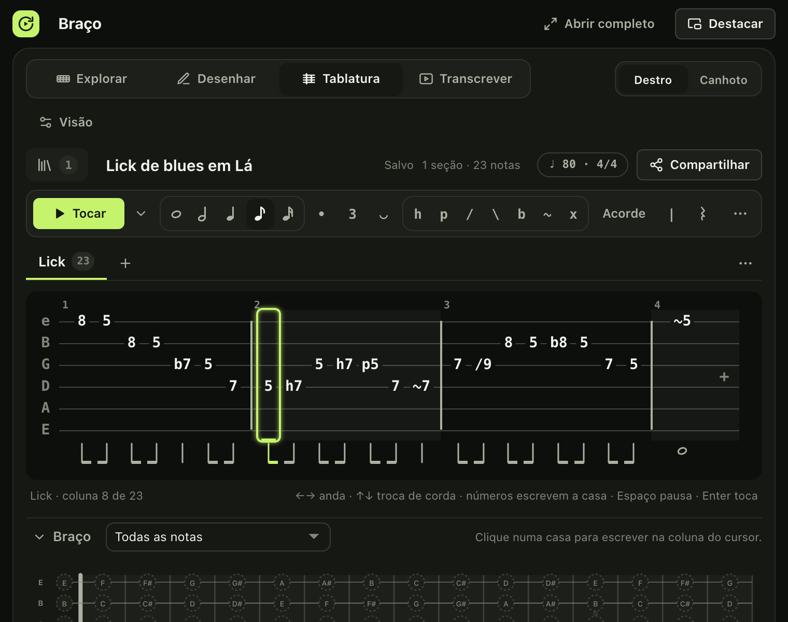
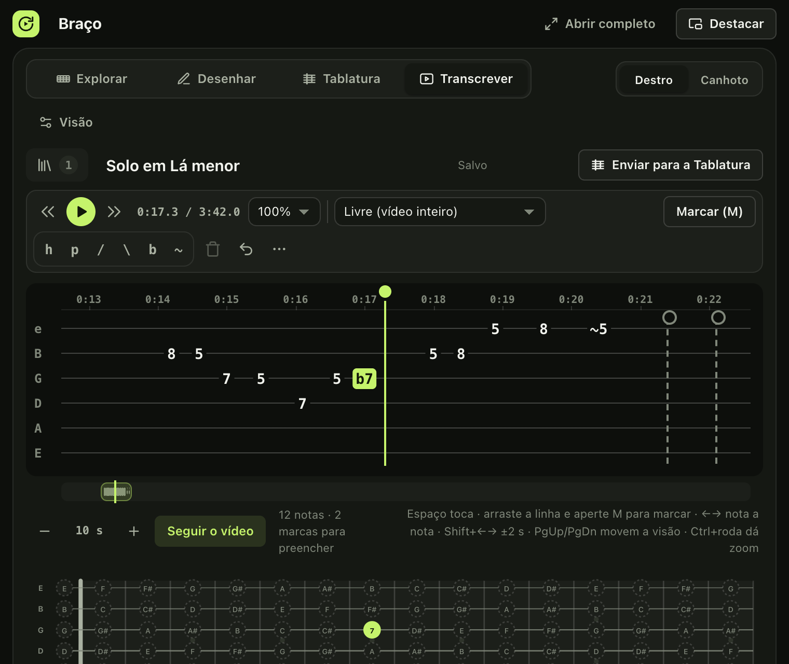
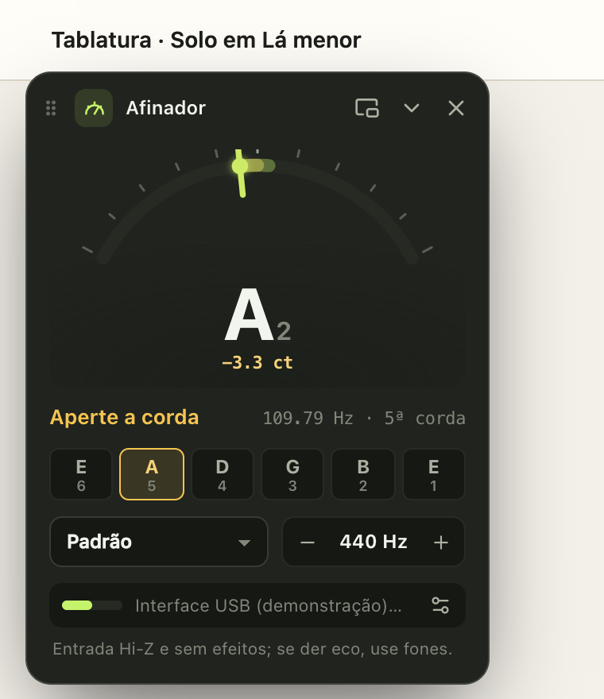

Instale o Loop Player
Pratique trechos de vídeos do YouTube em loop, sem sair da página da aula: velocidade, controle flutuante, afinador, metrônomo e o braço da guitarra com escalas, acordes, intervalos, tablaturas e o modo Transcrever, para tirar um solo do vídeo.

Instalar (2 minutos)
- Baixe o arquivoClique em Baixar a versão 0.9.7. Vem um arquivo
loop-player.zip. - Descompacte numa pasta fixaDê dois cliques no zip (no Windows, botão direito → Extrair tudo). Mova a pasta
loop-playerpara um lugar onde ela vai ficar, como Documentos. O navegador usa essa pasta enquanto a extensão estiver instalada: não apague nem mude de lugar. - Abra a página de extensõesDigite
chrome://extensionsna barra de endereços. No Edge éedge://extensionse no Brave,brave://extensions. - Ligue o Modo do desenvolvedorÉ a chave no canto superior direito da página (no Edge, no menu da esquerda).
- Carregue a pastaClique em Carregar sem compactação e escolha a pasta
loop-player, a que tem o arquivomanifest.jsondentro. O navegador não aceita o zip direto. - Fixe o íconeClique no ícone de quebra-cabeça da barra do navegador e no alfinete ao lado de Loop Player. O ícone mostra quantos vídeos ele achou na página.
Primeiros passos
O que tem no Loop Player

Braço: escalas, acordes e intervalos
Escalas e os cinco shapes da pentatônica, campo harmônico e intervalos, para destros e canhotos. Em Desenhar, marque notas e linhas e compartilhe seus diagramas.

Tablatura
Escreva clicando no braço ou pelo teclado, com ritmo, técnicas (bend, hammer-on, slide, vibrato), acordes e seções. Tocar reproduz com som de violão de nylon, aço ou guitarra.
Comece pelos Exemplos do menu ⋯ e compartilhe por código, arquivo, texto ou imagem.

Transcrever: tire um solo do vídeo
A linha do tempo do vídeo com as seis cordas. Toque M em cada nota com o vídeo tocando (ou arraste a linha até o ponto), escreva as notas pelo braço e envie o resultado para a Tablatura.

Afinador, Notas e metrônomo
O afinador e a identificação de notas usam a entrada de áudio do seu computador (o som é analisado aqui e nunca é gravado nem enviado). O metrônomo acompanha a velocidade do trecho.
Atualizar para uma versão nova
- Baixe o zip novoVolte a esta página e baixe a versão mais recente.
- Troque o conteúdo da mesma pastaApague os arquivos de dentro da pasta
loop-playerque você já usa e coloque no lugar os arquivos do zip novo. A pasta precisa continuar com o mesmo nome e no mesmo lugar. - RecarregueEm
chrome://extensions, clique no ícone de Recarregar (a seta circular) no cartão do Loop Player e atualize a página da aula.
Importante: a biblioteca, os trechos e os diagramas ficam guardados no navegador, ligados à pasta da extensão. Se você carregar a extensão de outra pasta, o navegador trata como outra instalação, com tudo vazio. Para levar seus dados, use Ajustes → Backup: exporte na instalação antiga e importe na nova, ou escolha uma pasta de backup automático.
Novidades desde a versão 0.6.0
- Versão 0.9.7
- Preparação da atualização na Chrome Web Store: resumo novo da loja (português, inglês e espanhol), descrição com Tablatura e Transcrever, capturas novas nos três idiomas e política de privacidade com tablaturas e transcrições.
- Transcrever: com o vídeo pausado, buscar outro ponto atualiza no braço a nota alcançada.
- As páginas de demonstração (
?demoVideo) simulam um vídeo, para mostrar e capturar o Transcrever fora da extensão.
- Versão 0.9.6
- Transcrever: a linha do tempo pode ser arrastada pela bolinha na régua (ou arrastando na régua e no espaço vazio), com o vídeo acompanhando; solte e aperte M para marcar. A linha anda sem tremer e para na hora ao pausar.
- Versão 0.9.5
- Som do Tocar mais quente e cheio: ataque mais macio, agudos que morrem antes dos graves, corpo de violão com ressonâncias, ambiência leve, cordas abertas no estéreo e notas que continuam soando (arpejos e acordes soam juntos). Escolha de timbre: Nylon, Aço ou Elétrica.
- O afinador e as Notas abrem no visual Animado por padrão (Clássico e Estroboscópico continuam em Ajustes).
- Versão 0.9.4
- Braço flutuante sobre a aula: a folha em linha única passava a largura da janela e empurrava a barra de ferramentas, a visão geral e o braço para fora; agora fica presa à janela e rola para os lados.
- Menus do Braço (⋯ da Tablatura e da seção, ⋯ do Transcrever, cor do Desenhar) se medem depois de abrir e voltam para dentro da tela, mesmo em páginas que aumentam o zoom ou a largura do documento.
- Versão 0.9.3
- Folha da Tablatura numa linha só, desenhada em canvas: rola para os lados, com visão geral da seção, compassos numerados e sombreados, cursor e seleção com brilho, e a coluna tocando deslizando de uma para a outra. Não quebra mais numa segunda linha cortada pela altura da folha.
- Versão 0.9.2
- Tablatura → ⋯ → Exemplos…: doze tablaturas prontas para testar (melodias em domínio público e licks originais de blues, rock e metal), com ritmo, andamento, acordes e técnicas.
- Versão 0.9.1
- Visual novo do afinador e das Notas em Ajustes → Aparência: Animado (ponteiro com inércia, brilho e partículas quando afina), Clássico ou Estroboscópico.
- Versão 0.9.0
- Tablatura com ritmo: durações (semibreve a semicolcheia), pontuada, tercina, ligadura, compasso e andamento por seção, linha de ritmo e código
LPT2(oLPT1continua para tablaturas sem ritmo). - Tocar a tablatura com uma guitarra sintetizada, com o braço acompanhando; compartilhar como imagem PNG, transpor com prévia e modo leitura.
- Interface da Tablatura como editor: a folha no alto, uma barra de ferramentas única, seções em abas, braço recolhível e dicas em todos os botões.
- Modo Transcrever: a linha do tempo de um vídeo para tirar um solo, com controles do vídeo, marcas feitas com
M, zoom e visão geral, acordes por coluna e Enviar para a Tablatura. Começa a praticar o vídeo da página sozinho, sem Praticar aqui. - Trecho pode ficar desmarcado: clicar de novo no trecho escolhido (no painel ou no controle da página, ou a tecla do número) deixa nenhum trecho escolhido. Sem trecho, o vídeo toca livre, sem A/B na barra do player e sem loop; zoom e foco esperam um trecho (espelhar continua valendo).
- Trecho pode ficar desmarcado: clicar de novo no trecho escolhido (no painel ou no controle da página, ou a tecla do número) deixa nenhum trecho escolhido. Sem trecho, o vídeo toca livre, sem A/B na barra do player e sem loop; zoom e foco esperam um trecho (espelhar continua valendo).
- Vídeo novo começa sem trecho escolhido. Marcar A, Marcar B ou ligar o loop escolhem de novo o último trecho (num vídeo novo, o trecho 1). Loops salvos e códigos compartilhados de antes continuam com o trecho que tinham escolhido.
- Tablatura com ritmo: durações (semibreve a semicolcheia), pontuada, tercina, ligadura, compasso e andamento por seção, linha de ritmo e código
- Versão 0.8.2
- Braço → Desenhar mais enxuto: a cor virou um menu compacto (botão com a cor atual que abre as oito) e o rótulo passou a valer para o diagrama inteiro, com a chave Notas | Graus | Nada; saíram a opção Texto, o campo de texto e os dedos 1–4. Cada marcação agora é só posição e cor, e a barra não muda mais de tamanho ao trocar de opção.
- Diagramas, códigos LPD1, arquivos
.loope backups das versões anteriores continuam abrindo: o diagrama fica com o rótulo que a maioria das marcações usava, e os textos (dedos, "R") são deixados de lado. Os códigos novos continuam legíveis pela 0.8.1.
- Versão 0.8.1
- Excluir trecho no painel volta a funcionar: pede confirmação, remove o trecho escolhido (o seguinte ocupa o lugar; excluindo o último, o anterior fica escolhido) e mantém sempre pelo menos um trecho.
- Versão 0.8.0
- Braço → Tablatura: escrever tablatura clicando no braço ou pelo teclado, com técnicas (hammer-on, pull-off, slides, bend, vibrato, abafada), acordes, compassos, pausas e seções com nome; seleção, copiar e colar entre seções e tablaturas; desfazer/refazer.
- Tablaturas (até 200) salvas pelo service worker, sincronizadas entre janelas, no backup e nos pontos de restauração.
- Compartilhar a tablatura, a seção ou a seleção por código
LPT1, arquivo.loopou texto ASCII; importar códigos, arquivos e tablaturas em texto de sites de cifras.
- Explorar → Todas as notas: os nomes de todas as notas do braço, com a escala em destaque.
- Braço → Tablatura: escrever tablatura clicando no braço ou pelo teclado, com técnicas (hammer-on, pull-off, slides, bend, vibrato, abafada), acordes, compassos, pausas e seções com nome; seleção, copiar e colar entre seções e tablaturas; desfazer/refazer.
- Versão 0.7.0
- Trecho na barra do player: faixa do trecho ativo sobre a barra de progresso do YouTube, com alças A e B arrastáveis, régua de precisão e teclado.
- Vídeo novo começa com o trecho do início ao fim e o loop desligado; segurar os botões de ajuste fino acelera o passo.
Problemas comuns
- "Manifest file is missing or unreadable" ao carregar
- Você escolheu o zip ou uma pasta acima da certa. Escolha a pasta que tem o arquivo
manifest.jsonlogo dentro. - O navegador avisa sobre extensões do modo do desenvolvedor
- É o aviso padrão para extensões instaladas fora da loja. Pode mantê-la ativa.
- A extensão apareceu com erro ou sumiu
- A pasta foi movida, renomeada ou apagada. Coloque-a de volta no lugar e clique em Recarregar.
- O controle não aparece numa página
- Atualize a página da aula depois de instalar ou recarregar a extensão. Páginas internas do navegador e a Chrome Web Store não permitem extensões.
- O afinador não ouve nada
- Na primeira vez, o navegador pede o microfone: permita. O áudio é processado no seu computador e nunca é gravado nem enviado.